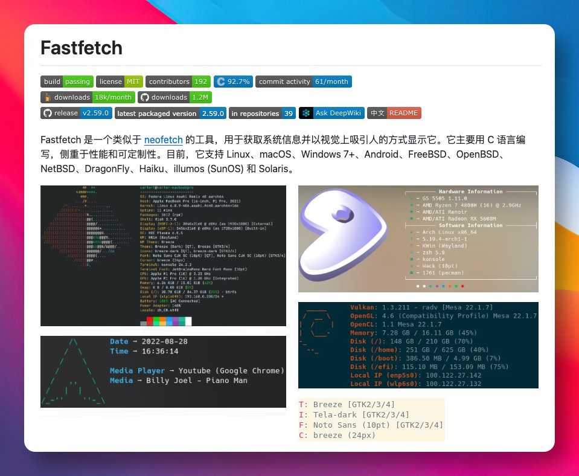

@GitHub_Daily 什么年代了还有人只知道neofetch，列举一些现代化的工具链：fd-find ripgrep sd eza bat zoxide atuin fzf delta zsh+zimfw neovim+lazyvim/micro btop/btop/bottom gdu zellij lazygit dust procs tealdeer yazi fnm ghostty fish nushell kew podman
全都可以去挨个尝试

全都可以去挨个尝试

用 Linux 或 macOS 系统，打开终端想快速查看系统信息，比如 CPU、内存、显卡型号，还想顺便炫一下系统 Logo，但 neofetch 已经停止维护了。
最近在 GitHub 上看到 Fastfetch 这个开源工具，就是 neofetch 的平替，主要用 C 语言编写，速度更快也更准确。 https://t.co/nkwDEjVbyl
最近在 GitHub 上看到 Fastfetch 这个开源工具，就是 neofetch 的平替，主要用 C 语言编写，速度更快也更准确。 https://t.co/nkwDEjVbyl